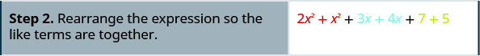

A10 · Elementary Algebra 2e · 1.2
Jembatan Bahasa Indonesia
Basa Aljabar
Four complete instructional source sections of module m82453. This is a partial book and partial module, not an entire chapter. Source exercises and supplied answers retain their IDs; open each answer only when ready.
Gunakan Variabel dan Simbol Aljabar
| Usia Greg | Usia Alex |
|---|---|
| Operasi | Notasi | Dibaca: | Hasilnya adalah… |
|---|---|---|---|
| Penjumlahan | a tambah b | jumlah a dan b | |
| Pengurangan | a kurang b | selisih a dan b | |
| Perkalian | a kali b | hasil kali a dan b | |
| Pembagian | a dibagi b | hasil bagi a dan b; a disebut bilangan yang dibagi, dan b disebut pembagi |
- Selisih 9 dan 2 berarti mengurangkan 2 dari 9, dengan kata lain, 9 kurang 2, yang kita tulis secara simbolis sebagai
- Hasil kali 4 dan 8 berarti mengalikan 4 dan 8, dengan kata lain 4 kali 8, yang kita tulis secara simbolis sebagai
| Simbol Pertidaksamaan | Kata-kata |
|---|---|
| a tidak sama dengan b | |
| a < b | a kurang dari b |
| a kurang dari atau sama dengan b | |
| a > b | a lebih dari b |
| a lebih dari atau sama dengan b |
Contoh dari sumber
Jawaban yang disediakan sumber
Penyelesaian
| Ekspresi | Kata-kata | Frasa dalam Bahasa Indonesia |
|---|---|---|
| 3 tambah 5 | jumlah tiga dan lima | |
| n kurang satu | selisih n dan satu | |
| 6 kali 7 | hasil kali enam dan tujuh | |
| x dibagi y | hasil bagi x dan y |
| Persamaan | Kalimat Bahasa Indonesia |
|---|---|
| Jumlah tiga dan lima sama dengan delapan. | |
| n kurang satu sama dengan empat belas. | |
| Hasil kali enam dan tujuh sama dengan empat puluh dua. | |
| x sama dengan lima puluh tiga. | |
| y tambah sembilan sama dengan dua y kurang tiga. |
Contoh dari sumber
Jawaban yang disediakan sumber
Penyelesaian
ⓐ |
Ini adalah persamaan—dua ekspresi dihubungkan oleh tanda sama dengan. |
ⓑ |
Ini adalah ekspresi—tidak ada tanda sama dengan. |
ⓒ |
Ini adalah ekspresi—tidak ada tanda sama dengan. |
ⓓ |
Ini adalah persamaan—dua ekspresi dihubungkan oleh tanda sama dengan. |

Deskripsi gambar
Angka dua ditampilkan dengan angka tiga sebagai superskrip di sebelah kanannya. Sebuah panah menunjuk ke angka dua dan berlabel “bilangan pokok”, sedangkan panah lain menunjuk ke angka tiga sebagai superskrip dan berlabel “eksponen”. Artinya, bentuklah hasil kali tiga faktor yang masing-masing bernilai 2, yaitu 2 kali 2 kali 2.
- “a kuadrat”
- “a kubik”
| Ekspresi | Dalam Kata-kata |
|---|---|
| 7 pangkat dua atau 7 kuadrat | |
| 5 pangkat tiga atau 5 kubik | |
| 9 pangkat empat | |
| pangkat lima |
Contoh dari sumber
Jawaban yang disediakan sumber
Penyelesaian
| Uraikan ekspresi. | |
| Kalikan dari kiri ke kanan. | |
| Kalikan. | |
| Kalikan. | 81 |
Sederhanakan Ekspresi dengan Urutan Operasi Hitung
Contoh dari sumber
Jawaban yang disediakan sumber
Penyelesaian
 Deskripsi gambarEkspresi matematika 4+3•7 ditampilkan dengan teks hitam pada latar putih. |
|
| Apakah ada tanda kurung? Tidak. | |
| Apakah ada eksponen? Tidak. | |
| Apakah ada perkalian atau pembagian? Ya. | |
| Kalikan terlebih dahulu. |  Deskripsi gambarEkspresi matematika '4+3•7' ditampilkan pada latar putih. Angka 4 dan tanda tambah berwarna hitam, sedangkan angka 3, titik perkalian, dan angka 7 berwarna merah. |
| Jumlahkan. |  Deskripsi gambarGambar menampilkan ekspresi matematika sederhana '4+21' dengan huruf hitam pada latar putih. |
 Deskripsi gambarAngka 25 ditampilkan dengan huruf abu-abu gelap pada latar putih polos. |
 Deskripsi gambarEkspresi matematika menunjukkan jumlah 4 dan 3 di dalam tanda kurung yang dikalikan dengan 7. Ekspresinya ditulis sebagai (4 + 3)·7. |
|
| Apakah ada tanda kurung? Ya. |  Deskripsi gambarEkspresi matematika menunjukkan (4+3) dikalikan 7. Angka 4 dan 3 berwarna merah, sedangkan tanda tambah, tanda kurung, titik perkalian, dan angka 7 berwarna hitam atau abu-abu gelap. |
| Sederhanakan bagian dalam tanda kurung. |  Deskripsi gambarEkspresi (7)·7 ditampilkan; angka 7 pertama berada dalam tanda kurung dan berwarna merah, sedangkan titik perkalian dan angka 7 kedua berwarna hitam. |
| Apakah ada eksponen? Tidak. | |
| Apakah ada perkalian atau pembagian? Ya. | |
| Kalikan. |  Deskripsi gambarAngka '49' ditampilkan dengan jelas pada latar putih polos menggunakan huruf abu-abu gelap atau hitam yang sedikit kabur. |
Contoh dari sumber
Jawaban yang disediakan sumber
Penyelesaian
| Tanda kurung? Ya, kurangkan terlebih dahulu. |  Deskripsi gambarEkspresi matematika menunjukkan 18 dibagi 6, ditambah 4 dikalikan 3, yaitu 18 ÷ 6 + 4(3). |
| Eksponen? Tidak. | |
| Perkalian atau pembagian? Ya. |  Deskripsi gambarEkspresi matematika 18 ÷ 6 + 4(3) ditampilkan dengan huruf merah pada latar putih untuk memperagakan urutan operasi hitung. |
| Bagi terlebih dahulu karena perkalian dan pembagian dilakukan dari kiri ke kanan. |  Deskripsi gambarEkspresi matematika '3 + 4(3)' ditampilkan dengan bagian '4(3)' disorot merah, yang menunjukkan bahwa perkalian dilakukan sebelum penjumlahan menurut urutan operasi hitung. |
| Masih ada perkalian atau pembagian? Ya. | |
| Kalikan. |  Deskripsi gambarEkspresi matematika sederhana '3 + 12' ditampilkan dengan huruf gelap yang jelas pada latar putih sebagai soal penjumlahan. |
| Masih ada perkalian atau pembagian? Tidak. | |
| Ada penjumlahan atau pengurangan? Ya. |  Deskripsi gambarAngka '15' ditampilkan dengan warna abu-abu gelap pada latar putih. |
Contoh dari sumber
Jawaban yang disediakan sumber
Penyelesaian
![Ditampilkan ekspresi matematika dengan bilangan serta operasi penjumlahan, pengurangan, perpangkatan, dan perkalian yang disusun menggunakan tanda kurung biasa dan siku: 5 + 2^3 + 3[6 - 3(4 - 2)].](assets/a10-order-operations/CNX_ElemAlg_Figure_01_02_008a_img_new.jpg) Deskripsi gambarDitampilkan ekspresi matematika dengan bilangan serta operasi penjumlahan, pengurangan, perpangkatan, dan perkalian yang disusun menggunakan tanda kurung biasa dan siku: 5 + 2^3 + 3[6 - 3(4 - 2)]. |
|
| Apakah ada tanda kurung (atau simbol pengelompokan lain)? Ya. | |
| Fokuskan pada tanda kurung biasa di dalam tanda kurung siku. | ![Soal matematika menampilkan ekspresi aritmetika 5 + 2^3 + 3[6 - 3(4 - 2)]. Pengurangan dalam tanda kurung terdalam, '4 - 2', disorot merah.](assets/a10-order-operations/CNX_ElemAlg_Figure_01_02_008b_img_new.jpg) Deskripsi gambarSoal matematika menampilkan ekspresi aritmetika 5 + 2^3 + 3[6 - 3(4 - 2)]. Pengurangan dalam tanda kurung terdalam, '4 - 2', disorot merah. |
| Kurangkan. | ![Ekspresi matematika berbunyi 5 + 2^3 + 3[6 - 3(2)]. Bagian '3(2)' disorot merah untuk menunjukkan langkah yang sedang dikerjakan.](assets/a10-order-operations/CNX_ElemAlg_Figure_01_02_008c_img_new.jpg) Deskripsi gambarEkspresi matematika berbunyi 5 + 2^3 + 3[6 - 3(2)]. Bagian '3(2)' disorot merah untuk menunjukkan langkah yang sedang dikerjakan. |
| Lanjutkan di dalam tanda kurung siku dan kalikan. |  Deskripsi gambarEkspresi matematika menampilkan 5 tambah 2 kubik tambah 3 dikalikan dengan besaran 6 kurang 6, dengan angka 6 kedua disorot merah. |
| Lanjutkan di dalam tanda kurung siku dan kurangkan. | ![Ekspresi matematika menunjukkan '5 + 2^3 + 3[0]'. Angka 0 di dalam tanda kurung siku disorot merah.](assets/a10-order-operations/CNX_ElemAlg_Figure_01_02_008e_img_new.jpg) Deskripsi gambarEkspresi matematika menunjukkan '5 + 2^3 + 3[0]'. Angka 0 di dalam tanda kurung siku disorot merah. |
| Ekspresi di dalam tanda kurung siku tidak perlu disederhanakan lagi. | |
| Apakah ada eksponen? Ya. |  Deskripsi gambarEkspresi matematika menunjukkan 5 tambah 2 pangkat 3, ditambah 3 dikalikan 0. |
| Sederhanakan eksponen. | ![Ekspresi matematika '5 + 8 + 3[0]' ditampilkan pada latar putih, dengan bagian '3[0]' disorot merah untuk menunjukkan bagian yang sedang dikerjakan.](assets/a10-order-operations/CNX_ElemAlg_Figure_01_02_008g_img_new.jpg) Deskripsi gambarEkspresi matematika '5 + 8 + 3[0]' ditampilkan pada latar putih, dengan bagian '3[0]' disorot merah untuk menunjukkan bagian yang sedang dikerjakan. |
| Apakah ada perkalian atau pembagian? Ya. | |
| Kalikan. |  Deskripsi gambarGambar menunjukkan ekspresi matematika 5+8+0. Angka 5 dan 8 beserta tanda tambah pertama berwarna merah, sedangkan tanda tambah kedua dan angka 0 berwarna hitam. |
| Apakah ada penjumlahan atau pengurangan? Ya. | |
| Jumlahkan. |  Deskripsi gambarEkspresi matematika '13 + 0' ditampilkan dengan huruf merah yang sedikit kabur pada latar putih. |
| Jumlahkan. |  Deskripsi gambar13 |
Menentukan Nilai Ekspresi
Contoh dari sumber
Jawaban yang disediakan sumber
Penyelesaian
 Deskripsi gambarTeks 'ketika x = 5' ditampilkan pada latar putih, dengan angka 5 disorot merah secara halus. |
 Deskripsi gambarEkspresi matematika '7x-4' ditampilkan pada latar putih, terdiri atas angka 7, variabel x, tanda kurang, dan angka 4. |
 Deskripsi gambarEkspresi matematika menunjukkan 7 dikalikan 5, kemudian hasilnya dikurangi 4, ditulis sebagai 7(5)-4. Angka 5 disorot merah. |
|
| Kalikan. |  Deskripsi gambarGambar menampilkan '35-4' dengan huruf abu-abu gelap pada latar putih. |
| Kurangkan. |  Deskripsi gambarAngka '31' tampak jelas di sudut kanan atas pada latar putih polos. |
Deskripsi gambarTeks 'ketika x = 1' ditampilkan pada latar putih, dengan angka 1 disorot merah. |
 Deskripsi gambarEkspresi matematika '7x-4' ditampilkan pada latar putih, terdiri atas angka 7, variabel x, tanda kurang, dan angka 4. |
 Deskripsi gambarEkspresi matematika berbunyi '7(1)-4', dengan angka 1 disorot merah secara jelas. |
|
| Kalikan. |  Deskripsi gambarEkspresi 7-4 ditampilkan pada latar putih. |
| Kurangkan. |  Deskripsi gambarTampak dekat angka 3 berukuran besar dan berwarna abu-abu gelap pada latar putih bersih. |
Contoh dari sumber
Jawaban yang disediakan sumber
Penyelesaian
 Deskripsi gambarGambar menampilkan teks 'Ganti x dengan 4.' dengan huruf sans-serif abu-abu dan angka 4 disorot merah pada latar putih polos. |
 Deskripsi gambarTampak dekat angka 4 besar berwarna merah yang dipangkatkan 2. |
| Gunakan definisi eksponen. | |
| Sederhanakan. |
 Deskripsi gambarTeks 'Ganti x dengan 4.' ditampilkan secara digital. Kata-katanya berwarna abu-abu gelap, sedangkan angka 4 disorot merah jingga dan diikuti titik abu-abu gelap. Latar belakangnya putih. |
 Deskripsi gambarEkspresi matematika menunjukkan 3 pangkat 4, ditulis sebagai 3^4, dengan 3 sebagai bilangan pokok dan 4 sebagai eksponen. Adaptasi warisan edisi Indonesia (v1.0.2)Gambar ulang untuk langkah substitusi x = 4: 3^x menjadi 3^4. Ini bukan piksel kanonis OpenStax yang tidak diubah. Bandingkan gambar kanonis · SHA-256 / provenance. |
| Gunakan definisi eksponen. | |
| Sederhanakan. |
{kind=link}
Contoh dari sumber
Jawaban yang disediakan sumber
Penyelesaian
 Deskripsi gambarTeks 'Substitusikan x = 4.' ditampilkan dengan angka 4 disorot merah. |
 Deskripsi gambarEkspresi matematika menunjukkan 2 kali 4 kuadrat tambah 3 kali 4 tambah 8, ditulis sebagai 2(4)^2 + 3(4) + 8, dengan huruf hitam pada latar putih. Adaptasi warisan edisi Indonesia (v1.0.2)Gambar ulang untuk langkah substitusi x = 4: 2x² + 3x + 8 menjadi 2(4)² + 3(4) + 8. Ini bukan piksel kanonis OpenStax yang tidak diubah. Bandingkan gambar kanonis · SHA-256 / provenance. |
| Ikuti urutan operasi hitung. | |
{kind=link}
Mengidentifikasi dan Menggabungkan Suku-suku Sejenis
Contoh dari sumber
Jawaban yang disediakan sumber
Penyelesaian
- 7 dan 4 merupakan suku sejenis.
- 5x dan 3x merupakan suku sejenis.
- dan merupakan suku sejenis.
Contoh dari sumber
Jawaban yang disediakan sumber
Penyelesaian
Contoh dari sumber
- ⓐ
- ⓑ
Jawaban yang disediakan sumber
Penyelesaian
- ⓐSuku-suku dari adalah 7x, dan 12.
- ⓑSuku-suku dari adalah 8x dan 3y.
Contoh dari sumber
Cara Menggabungkan Suku Sejenis
Jawaban yang disediakan sumber
Penyelesaian
![Tiga baris petunjuk tercantum dalam kolom di sisi kiri gambar, sedangkan empat bentuk aljabar tercantum di kanan. Baris petunjuk pertama di kiri berbunyi: “Langkah 1. Identifikasi suku-suku sejenis.” Di seberang langkah 1 pada kolom kanan terdapat bentuk aljabar 2x kuadrat tambah 3x tambah 7 tambah x kuadrat tambah 4x tambah 5. Satu baris di bawahnya, ekspresi yang sama diulangi, tetapi setiap suku menggunakan salah satu dari tiga warna untuk menunjukkan suku-suku sejenis: 2x kuadrat dan x kuadrat berwarna merah; 3x dan 4x berwarna biru; 7 dan 5 berwarna hijau.](assets/a10-combine-like-terms/CNX_ElemAlg_Figure_01_02_014a_new.jpg)
Deskripsi gambar
Tiga baris petunjuk tercantum dalam kolom di sisi kiri gambar, sedangkan empat bentuk aljabar tercantum di kanan. Baris petunjuk pertama di kiri berbunyi: “Langkah 1. Identifikasi suku-suku sejenis.” Di seberang langkah 1 pada kolom kanan terdapat bentuk aljabar 2x kuadrat tambah 3x tambah 7 tambah x kuadrat tambah 4x tambah 5. Satu baris di bawahnya, ekspresi yang sama diulangi, tetapi setiap suku menggunakan salah satu dari tiga warna untuk menunjukkan suku-suku sejenis: 2x kuadrat dan x kuadrat berwarna merah; 3x dan 4x berwarna biru; 7 dan 5 berwarna hijau.

Deskripsi gambar
Baris petunjuk kedua di kiri berbunyi: “Langkah 2. Susun ulang ekspresi agar suku-suku sejenis berdekatan.” Di seberang langkah 2 pada kolom kanan terdapat bentuk aljabar semula dengan susunan suku diubah sehingga suku-suku sejenis berdampingan: 2x kuadrat tambah x kuadrat, keduanya berwarna merah; ditambah 3x tambah 4x, keduanya berwarna biru; ditambah 7 tambah 5, keduanya berwarna hijau.
Deskripsi gambar
Baris petunjuk ketiga di kiri berbunyi: “Langkah 3. Gabungkan suku-suku sejenis.” Di seberang langkah 3 pada kolom kanan terdapat bentuk aljabar setelah suku-suku sejenis digabungkan: 3x kuadrat berwarna merah, ditambah 7x berwarna biru, ditambah 12 berwarna hijau.
Naskah wacan / Naskah narasi
Written narration and SSML only. No recorded or synthesized audio is supplied. Components follow the reader order.
- a10-variable-bridge: written narration · SSML
- a10-operation-symbols: written narration · SSML
- a10-equality-symbols: written narration · SSML
- a10-grouping-symbols: written narration · SSML
- a10-expressions-equations: written narration · SSML
- a10-exponents: written narration · SSML
- a10-order-operations: written narration · SSML
- a10-evaluate-expressions: written narration · SSML
- a10-combine-like-terms: written narration · SSML